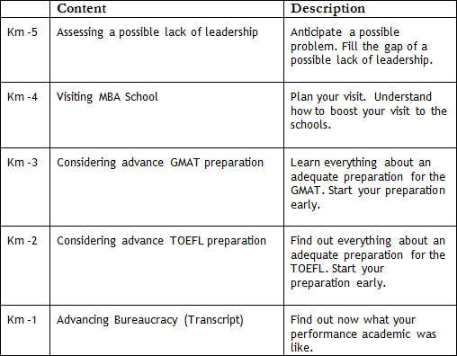

Yes, by now, I expect you to have
(i.) a sound argument to explain why to attend an MBA;
(ii.) a hypothesis for your post-MBA career goal.


Yes, and now, what do I need to do – concretely – to start my project? I’m getting anxious. (laughing)

Take it easy. Now that you have grasped these two points, it is high time you took steps to solidify your background before you begin the application process. What you will do during this pre-application process will positively affect your chances for admission to a top-tier MBA program.
Great, but – concretely – what should I do now?
Here are five specific actions that every single serious applicant should take before embarking on the application process. These are 5 Km before the official beginning of the Marathon.

Keep Running